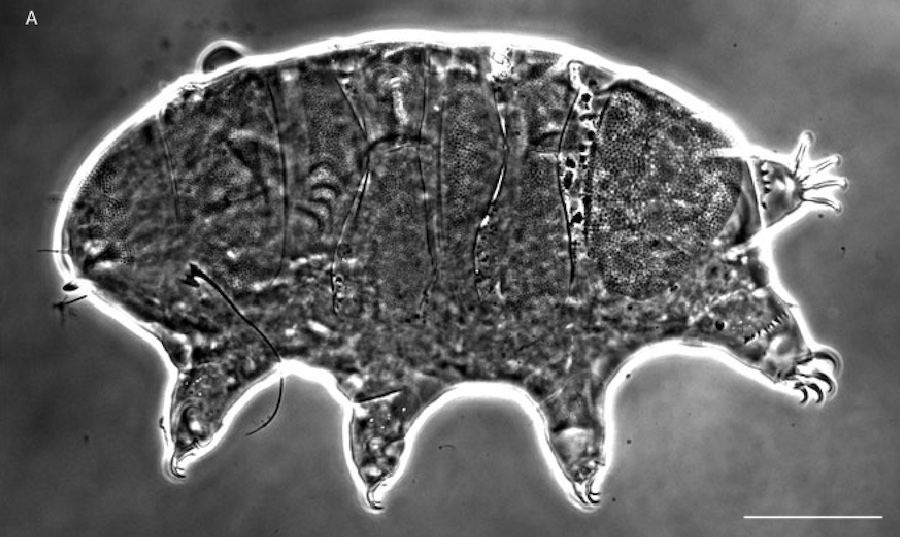

Time to find out what we know
Introduction
Expand your knowledge by interlinking it to create a network of knowledge. In this months newsletter, we help you to find out how you enhance your publications, we present news from Plazi and show our latest publications and upcoming events.
Species of the Month

The Echiniscus Pardalis is a new species of Tardigrada, it was collected on two moss samples in the Parco Naturale delle Alpi Marittime in northwestern Italy. It’s irregularly and distantly scattered deep pores on the plates and a unique subsurface cuticular pattern on the plates resemble of a leopard’s fur. You find the full treatment here.
Newly added Species
In August we liberated the taxonomic treatments of:
- 12'765 animals
- 35'211 plants
- 4'656 fungi
- 780 microorganisms
and integrated them to our interlinked TreatmentBank
Editorial
This month, we succeded to add the millionth treatment to the Treatment Bank. Furthermore, we oppened a new twitter account called @plazi_species, where some of the newly added species behind the treatments are presented.
Plazi News
Another milestone in the development of modern biology was the introduction of the standardization resulting from comparative and reference works.
Comment
This month the new report of the IPCC was published presenting new insights of the changing climate. In the chapter Biodiversity it stresses to fight the problems caused by climate change together with the loss of biodiversity. To save biodiversity, it’s highly important to know, what we already know about the species and therefore our work gains even more importance. (this is just invented, I’m not shure if there’s a chapter about biodiversity in the new IPCC-Report but maybe…)
Where to meet us?
A change in paradigm: From publications to publishing building blocks of digital accessible biodiversity knowledge at the 22nd Meeting of the GfBS together with the Muséum nationale d’Histoire de Paris.
Publications
Rivera-Quiroz A, Petchaard B, Miller J A 2020. Mining data from legacy taxonomic literature and application for sampling spiders of the Teutamus group (Araneae; Liocranidae) in Southeast Asia. Scientific Reports 10: 15787. doi: 10.1038/s41598-020-72549-8
Dimitrova M, Poelen J, Zhelezov G, Georgiev T, Agosti D, Penev L 2020. Semantic publishing enables text mining of biotic interactions. Biodiversity Information Science and Standards 4: e95036. doi: 10.3897/biss.4.59036
Biodiversity Literature Repository
The Biodiversity Literature Repository (BLR) just added more taxonomic literature and made its content FAIR (findable, accessible, interoperable and reusable).